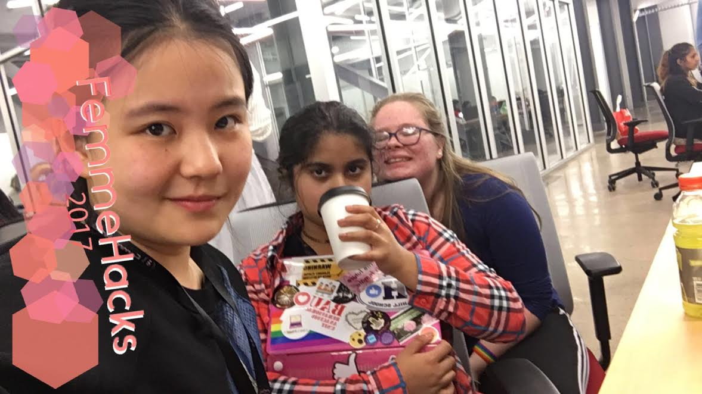
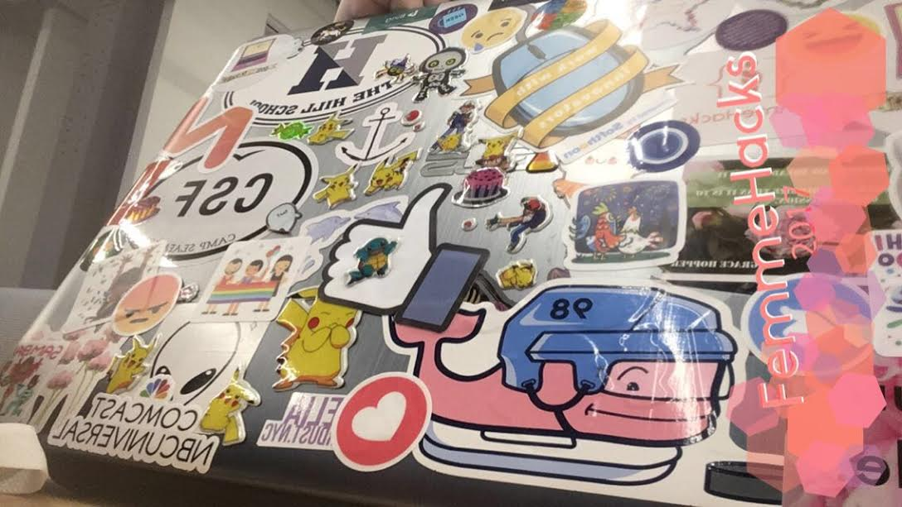
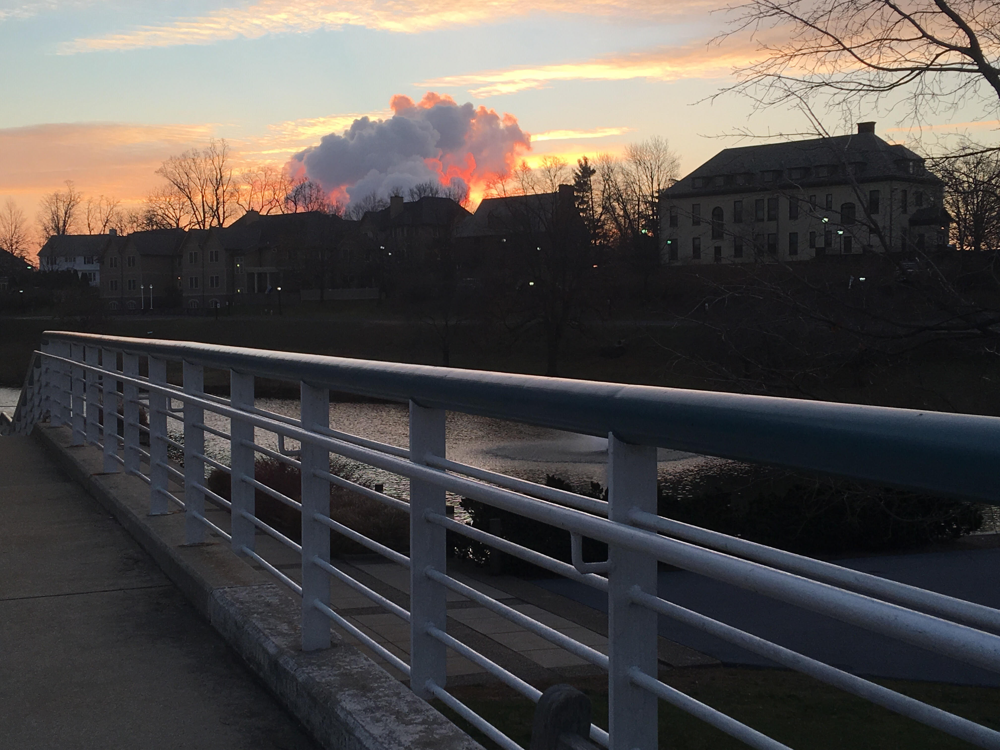
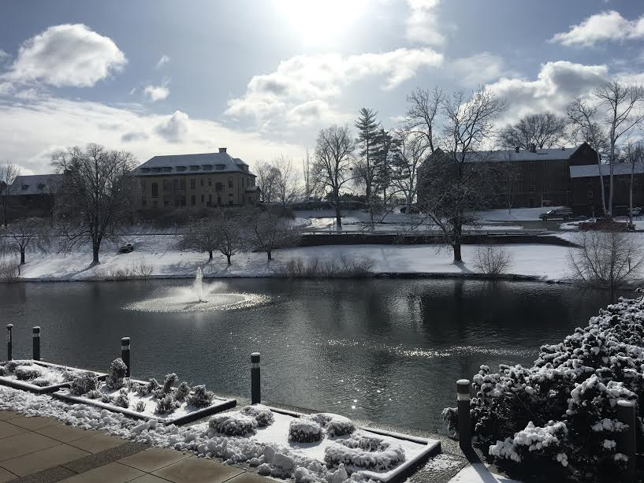

Adventures in STEM
AJ's Post February 25, 2017
Before coming to Hill, I was interested in STEM, but didn’t really have any means of pursuing my interest so when I came to Hill and had the opportunity to take more STEM-based classes, I was really excited. Prior to the start of the year, I was already interested in computer programming, and now that I can take multiple classes on the subject, I am even more excited about it! When I came into my freshman year, I had absolutely no idea how to program, so I enrolled in the intro class. So far this year, we’ve been working with Python and Python on the Raspberry Pi. For me, Python was a good language to begin with, because it had a lot of available shortcuts and can actually assist you with writing code. We’ve covered a wide range of things this year, slowly building up our “toolbox” so we can make more and more advanced programs. I’ve enjoyed the subject matter a lot but it’s been hard for me to interact with my classmates, since there are only three girls in the class, including me. I was already considering computer programming for my future and was definitely encouraged by taking this class and even more by attending Femmehacks and seeing that I definitely could have a future in this field. (and also be really cool too!) As for math, I’m really not that good to be honest, but have still found success (somehow) in my Math 11 class. We’ve been reviewing things that I had gone over before and have now solidified and been able to use in other contexts since the program is integrated. My level will progress from Algebra 1 this year to Pre-Calc my senior year, using knowledge from previous years so we can still retain the information and use it in more that one way each. Our Integrated Science program is intended to go through Bio, Chem, and Physics in two years so we have the opportunity to take more advanced classes junior and senior year. Right now, we are studying Physics and I’m surprisingly not dead. (yet) At the level we’re learning it at right now, I think it’s not as impossible as I thought it would be and that, as long as one has a basic understanding of algebra, they would be pretty okay with the actual math that goes into Physics. All in all, I really think that I have some really good opportunities where I am and will be able to learn a lot and be successful. I’m hoping that by the time college rolls around, I’ll be a lot more advanced and know more what I’m doing. Honestly STEM is actually wonderful and I really hope that more girls will join the field and be as hyped about it as I am! 
Nethmin's Post February 25, 2017
Prior to coming to Hill, my background in STEM wasn’t the greatest. The academics in my public school district were a mess, and that resulted in my math and science education having gaps in it. As for engineering and technology, there weren’t even any courses offered in those subjects. Now that I’m at Hill, I’m happy to say that I have many more options in terms of STEM education. I’m currently in the Integrated Science class taught by our lovely meme of a teacher, Doc Schmidt, and I am #living in that class. We’re learning Physics right now, and I have been blessed with the discovery that it is impossible for someone to walk at the speed of 800 miles per mile. In all seriousness, Integrated Science is a wonderful course that gives bright, motivated students the option of finishing their study of the basic sciences at an accelerated pace, and taking AP classes sooner. So far, I’ve learned a lot in this class, and I look forward to learning more from my wonderful (entertaining) teacher. In terms of Computer Science, I’m not currently enrolled in the course, as much as I wish I could be. Unfortunately, I do not have room in my schedule for CompSci, but I hope to learn, and master some skills through attending workshops and hackathons such as FemmeHacks. I plan to supplement these skills by participating in some summer programs (and just hoping I’m not messing up too horribly). I’m also enrolled in Engineering 1, and I am really enjoying it. The course involves a lot of group work and collaboration, and as a highly independent person, it was hard for me to get used to depending on someone else for parts of a project, however, it has been a good learning experience. The course itself covers all of basic engineering, and then escalates into more complex topics. I found that Engineering hasn’t yet required any major CompSci-type knowledge, but as required some trigonometry, which came as a surprise. The engineering program director, Mr. Jump, is a wonderful sweet human being, despite all his attempts to convince the world that he isn’t, and I’m really enjoying working with him. The Integrated Math 31 course has definitely been the biggest challenge for me. I came from a school whose math program was kind of a hot mess, and I’ve never considered myself to be very good at math, so, as you can imagine, taking an accelerated honors course is a challenge. The course is very fast paced, and is even more challenging if you haven’t taken geometry before (like me). A lot of my experience in this course has been me blundering around trying to figure out what to do, but our teacher, Mr. Enos, has been very kind and helpful, even earning the title of my honorary granddad. Although I’m often confused in this class, I am enjoying the challenge, and I really am learning a lot. So basically, I really like STEM. And I’m finally getting to take courses that are relevant to STEM. While I do make a lot of mistakes and do stupid things, the courses and teachers at Hill are excellent, and I’m looking forward to learning so much more
Juliana's Post February 25, 2017
I have always been very passionate about STEM. Before I came to Hill, maths and science were already my strong subjects, but experiences at the Hill helped me to gain better and deeper understanding of what I learnt. I ask the best questions, according to my science teacher (although it’s hard to always keep up to that standard which inevitably leads to questions such as “Can human beings evolve to dodge bullets” that remain to be Dr Schmidt and my friends’ main source of entertainment until today), and fortunately my teachers are the ones who give the best answers. Something about Hill’s STEM that I really appreciate is that we don’t just ask questions, we take time to find out the answers by ourselves, speaking of which I must highlight here my engineering class. I’m not kidding when I say my engineering teacher never teaches. What we do every day in engineering is going into the lab and working on our own stuff with our partners, following the instructions on the textbook. The teacher only gives us guidance, or rather inspiration when necessary. This is a very bold attempt as a teacher and really helps us to develop our creativity and prepare us for a successful future career in STEM. As for T in STEM, our school provides rigorous courses in computer science and activities involving robotics and 3D printing. I am currently not involved in those but I much look forward to. I only started to program 24 hours ago when I came to Femmehacks, but I love it and definitely plan to have more fun with coding in the future, even starting from this spring break!
